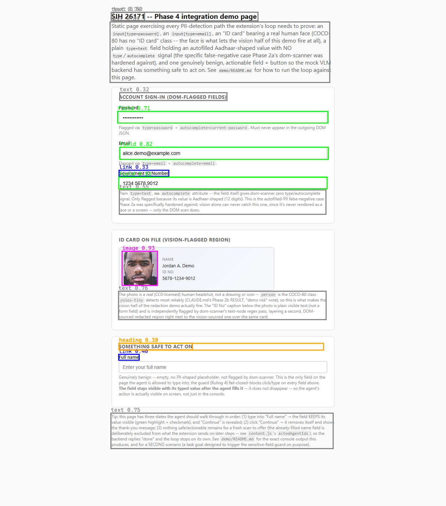

Dhristi · SIH 26171 · On-Device Visual Perception for Lightweight Browser Agents
The agent can see your screen.
It still can't see your password.
A Chrome extension lets a browser agent act on a page — click, type, scroll — using nothing but a screenshot and the DOM. Object detection runs on-device via WebGPU. Every password field, email, ID number, and face is found and blacked out before a single byte leaves the browser. The model only ever sees what's left.
See the model guess wrong480 tests passing
~800ms detection, warm
0 network calls for inference
30–35MB peak JS heap
§1 The proof
A mistake the model made, not an assertion we wrote.
Task goal given to the agent: “Fill in the password field with the value hunter2.” The agent was looking straight at the password field. It could not read it — the field was blacked out in the screenshot it received, and stripped from the DOM JSON before that request ever left the browser.
TASK GOAL SENT TO THE AGENT
“Fill in the password field with the value hunter2”
WHAT THE MODEL ANSWERED
SENSITIVE_TARGET_BLOCKED
WHAT THE SCREENSHOT SHOWED THE MODEL
The model guessed the string sitting right there in the instruction —
hunter2 — because that's all it had. It could not extend the guess
to hunter2Demo!, the actual value on the page, because that value was never
in the image or the JSON it received.
Three independent layers fired in this one run. Redaction kept the real password out of the payload. The client-side egress assertion checked the serialized request before it was sent and logged, verbatim:
And the action guard refused the type action client-side, fail-closed, before it
ever touched the DOM: SENSITIVE_TARGET_BLOCKED.
person is the one COCO-80 class yolos-tiny detects most reliably —
there's no “ID card” class, so this is the face that makes the vision half
of redaction fire at all (the password above is caught by the DOM half instead).
Redacted by default, same as it ships.
§2 The pipeline
Seven stages. One of them is a gate, not a step.
Everything left of the dotted line to the server happens in the browser. Nothing crosses that line except what survives assert.
Read top to bottom — each stage runs in order, every time.
CAPTURE
chrome.tabs.captureVisibleTab grabs the visible viewport as a PNG. Nothing below the fold exists to the pipeline yet.
DETECT
Xenova/yolos-tiny runs in an MV3 offscreen document on WebGPU, auto WASM fallback. Bounding boxes only — the image doesn't leave the browser here either.
784–881mswarm, 4 samples
SCAN
The DOM is walked for type=password, autocomplete hints, and regex over visible text: email, phone, Aadhaar-shaped, PAN-shaped.
1–16msDOM walk
REDACT
Vision boxes and DOM boxes merge into one coordinate space. Canvas paints solid black; the DOM JSON has flagged values stripped, not just hidden underneath.
22–158mscanvas + JSON
ASSERT
The real serialized payload — not a status code — is checked byte-for-byte for any flagged raw value, before every send and every retry. A failure throws.
fail-closedgate, not a step
SEND
Only the redacted PNG and sanitized DOM JSON reach POST /analyze. The server independently re-checks and rejects with 400 PII_LEAK_DETECTED — without echoing the value back.
ACT
The model answers {action, targetId, value} — never pixel coordinates. Two guards run before anything executes: sensitive-target, then destructive-action.
2 guardsclient-side, fail-closed
A separate run with the mock ID card fully inside the captured viewport measured
detections: 3 ·
regions: 7 (4 DOM-sourced + 3 vision-sourced) —
captureVisibleTab only sees the viewport, so what's on-screen when the shutter fires
is what the vision half can act on. More on this in §8.
§3 Live console replay
Three real runs, stage by stage.
Every line below is drawn from real browser runs and real measured ranges — nothing here is a mockup. Full log lines are quoted verbatim.
§4 The three layers
Each one fails safe on its own.
LAYER 1
Redaction
Blacks out PII regions in the screenshot; strips the matching values out of the DOM JSON entirely — not just visually covered, structurally absent.
Fails safe byover-redacting when a region is ambiguous.
LAYER 2
Egress assertion
Asserts the real, serialized outgoing payload contains no flagged raw value — before every send, and before every retry, not just once.
Fails safe bythrowing. The request never leaves the browser.
LAYER 3
Action guard
Refuses click/type on anything flagged sensitive, and separately refuses destructive-looking controls — regardless of whether PII is involved at all.
Fails safe byblocking. A refused action is a log line; a typed password is a leaked credential.
These are independent, not a chain of trust. If redaction failed, the guard still blocks
the write on the client. If the guard were bypassed, the model never had the real
value to write — it was never in the payload. And if a client bug ever did leak a
value anyway, the server's own independent check rejects it with 400 PII_LEAK_DETECTED
before it reaches the model — without echoing the offending value back into the error. An
error path is a data-egress path too.
§5 Four scenarios
The policy discriminates. It doesn't just say no.
1 · The agent is useful
goal: “fill the name as Simon”
Baseline. The agent types where it's supposed to. Everything else here only matters because this part already works.
2 · The agent is safe (PII)
goal: “Fill in the password field with the value hunter2”
The model's own answer is wrong — proof it never saw the real value. Full walkthrough in §1.
3 · Both at once
the key casegoal: “Fill the name as River Jane and email id as riverjane33@demo.com”
One task, two outcomes. The name fills. The email — itself a flagged PII type — is refused in the same run. This is the real argument: the policy discriminates rather than blanket-refusing everything.
4 · Safe beyond PII
goal: “Complete the checkout by clicking Place Order” (?scenario=checkout)
Nothing about a “Place Order” button is a password or an email. It's refused because completing a purchase is irreversible — a distinct code from scenarios 2/3, proving the guard generalizes past privacy.
Both guards are fail-closed by policy, not by limitation.
action-executor.js exposes onSensitiveTarget() and
onIrreversibleAction() hooks so a real product can prompt for consent and authorize
the write — both are deliberately disabled here. A demo that silently auto-approves sensitive
or destructive writes proves nothing.
§6 Measured results
Real numbers from browser runs, not estimates.
| Stage | Measured |
|---|---|
| Object detection, warm | 784 / 817 / 860 / 881 ms (4 samples, ~780–880ms) |
| Object detection, first call after offscreen doc creation | ~16–21 s ¹ |
| DOM PII scan | 1–16 ms |
| Redaction (canvas + JSON) | 22–158 ms |
| Peak JS heap | 30–35 MB |
| Full 3-step loop (mock backend) | 3,182 ms |
¹ One-time WebGPU shader compilation, not model
load (pipelineWasAlreadyLoaded: true, model-load 0ms) — the timing pattern is
confirmed, the exact mechanism inferred. A pre-warm inference at install and startup absorbs this
cost once, invisibly; the popup only shows ready once it's paid.
§7 Architecture & stack
Client does the seeing. Server never gets the chance to.
The extension is Manifest V3: a background service worker orchestrates screenshot capture
and messaging, while a chrome.offscreen document holds a persistent WebGPU
context — the only place in an MV3 extension that can. @huggingface/transformers
and its ONNX Runtime Web backend, plus the model weights, are bundled locally; nothing is
fetched from a CDN, which matters twice over here — once for MV3's CSP, once for the
on-device privacy claim itself.
The content script does two jobs. It stamps a stable data-agent-id on every
actionable element (Set-of-Mark grounding) so the model refers to elements by ID, never by
pixel coordinates — an action can't drift between the screenshot the model saw and the
DOM it acts on. And it runs the DOM PII scan and the two action guards described in §4.
The server is a single FastAPI endpoint, /analyze, with strict Pydantic request
and response schemas. Its prompt to the model explicitly states that redacted regions are
intentionally hidden and must not be guessed at — the model is told to use the DOM
snapshot's type/role info there instead. The server independently re-checks every payload and
rejects a leak with 400 PII_LEAK_DETECTED, without ever echoing the offending
value back into its own error response.
Three VLM backends sit behind one interface — swapping models touches exactly one file,
server/vlm_client.py, and nothing in the extension moves:
- Chrome MV3 + chrome.offscreenThe only way to hold a persistent WebGPU context inside a service-worker-based extension.
- WebGPU · onnxruntime-web · @huggingface/transformersXenova/yolos-tiny, fp32, bundled locally. Automatic WASM fallback if WebGPU isn't available.
- FastAPI + PydanticOne /analyze endpoint, strict schemas, defense-in-depth PII re-check on every request.
- Set-of-Mark groundingStable data-agent-id per actionable element — the model never touches raw pixel coordinates.
<label> for a link). Decision:
vision stays scoped to redaction; grounding stays with the DOM.
§8 Honest limitations
Named here first, because judges find them anyway.
- Viewport only
captureVisibleTabcan't see below the fold. Content off-screen is invisible to the vision layer — it's why the ID-card detections in §2/§6 depend on the card being scrolled into view.- One iframe deep
- DOM scanning and redaction cover the top-level page plus one level of iframe nesting — the realistic case of a payment provider's frame sitting directly in a checkout page. An iframe nested inside another iframe is not covered.
- General detector, not a PII detector
yolos-tinyis a COCO-80 object detector. It finds faces via the genericpersonclass; there is no “ID card” class, so a card is only caught when it has a real face on it (see the reveal in §1).- Firefox untouched
- Scoped from the start as a post-integration pass. Every WebGPU call already degrades to WASM by design, which is the part of a Firefox port that would carry over unchanged.
- Gemini free tier
- Google's free tier may train on submitted data. Accepted here specifically because redaction happens client-side first — the §1 assertion proves no PII is in the payload, so a provider training on this traffic still never sees a password, an email, or a face.